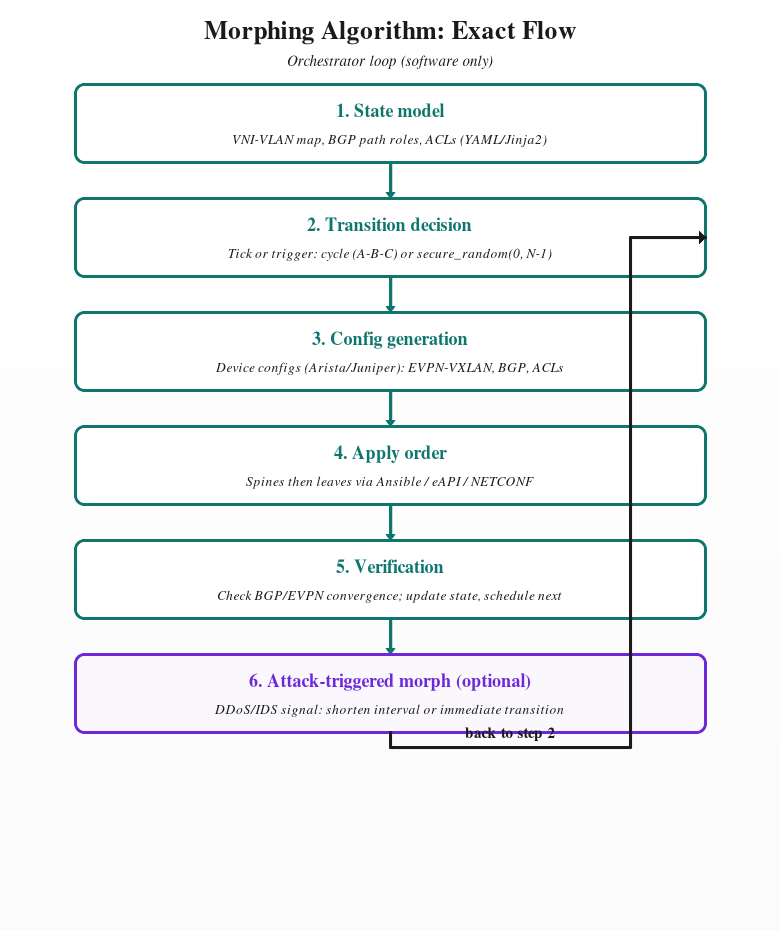
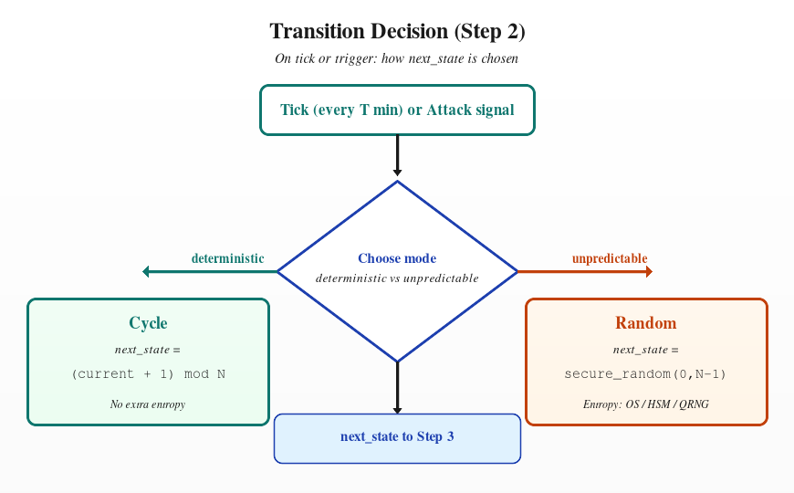
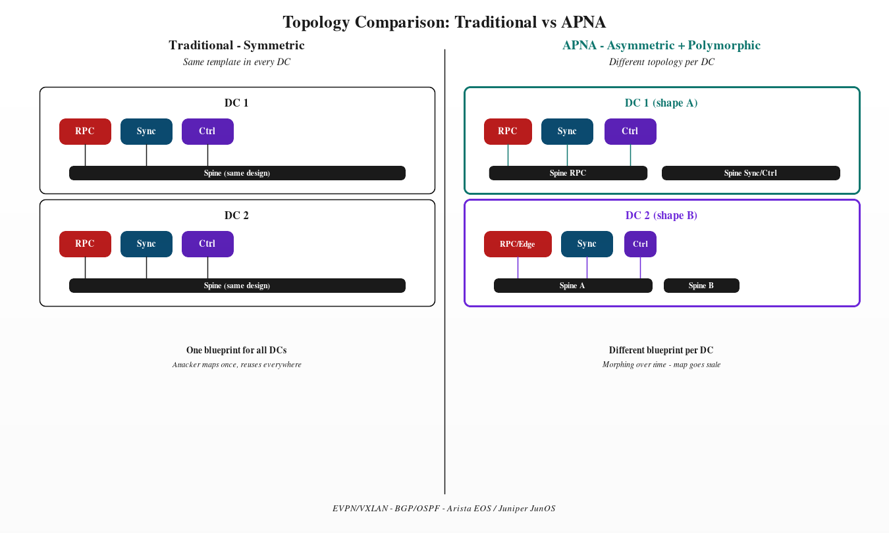
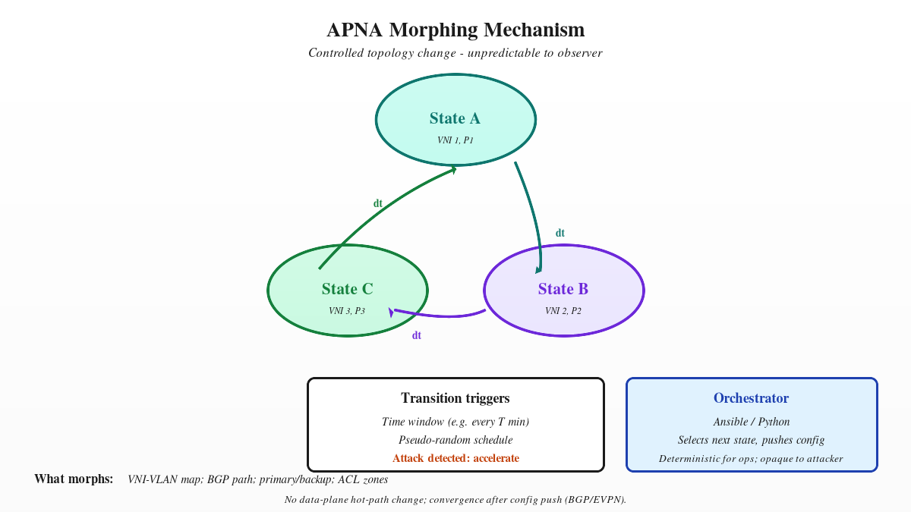

This whitepaper proposes Asymmetric Polymorphic Network Architecture (APNA) for large-scale distributed infrastructure hosting blockchain nodes and RPC services. APNA combines asymmetric treatment of traffic and failure domains (by role and plane) with polymorphic behaviour: intentional diversity of topology and segmentation plus controlled, dynamic change of that topology over time, unpredictable to an external or partially compromised observer. The goal is to reduce single-point-of-failure, single-pattern-of-attack, and pattern-stability for attackers—making reconnaissance and persistence harder without introducing operational bottlenecks. The design is grounded in technologies already in use: EVPN/VXLAN, BGP/OSPF, Arista EOS and Juniper JunOS, with automation via Ansible and Python.
1. Problem Statement and Demand Justification
1.1 Threat Landscape (2024–2025)
Volume: Cloudflare blocked 20.5 million DDoS attacks in Q1 2025—358% YoY increase; ~96% of all attacks blocked in 2024 [1].
Infrastructure targeting: ~6.6 million attacks targeted network infrastructure directly in an 18-day multi-vector campaign [1].
Intensity: ~700 hyper-volumetric attacks >1 Tbps or 1 Bpps; peaks at 4.8 Bpps and 6.5 Tbps [1][2].
Web3/node risks: malicious RPC nodes, state-sync and chain-split vulnerabilities [3][4][5]. Static, uniform topology is easier to probe and attack repeatedly.
1.2 Limitation of Static, Symmetric Designs
Same template across DCs → one reconnaissance gives a blueprint for many. Symmetric roles → predictable failure propagation. Stable addressing → attackers build accurate maps. Moving Target Defense (MTD) addresses this by changing the attack surface over time [6][7][8]; APNA does so without unacceptable overhead (Section 4).
2. Concept Definition
2.1 Asymmetric
Differentiation by function and plane: control vs data vs RPC/edge treated differently (failure domains, path policies). Internal sync isolated from public RPC and management. Reduces single-point-of-failure and single-pattern-of-attack.
2.2 Polymorphic
Diversity: Intentional variation of topology/segmentation across DCs (no single template). Dynamic change: Topology changes over time (policy, time windows, or pseudo-random schedule). Orchestrated and deterministic for the control plane, but unpredictable to an external or partially compromised observer—hard to identify stable informational patterns.
2.3 Combined
Asymmetry limits blast radius; polymorphism (diversity + dynamic change) makes reconnaissance and persistence harder. Together = APNA.
3. Technology Grounding
APNA uses the same stack as typical Web3/node infrastructure:
Layer
Technology
Role in APNA
L2/L3 overlay
EVPN/VXLAN
Segment diversity; dynamic VNI/segment re-assignment under orchestration.
Underlay
BGP, OSPF
Asymmetric policies per plane; optional route/path variation over time.
Switches
Arista EOS, Juniper JunOS
EVPN-VXLAN, BGP, ACLs; config driven by automation.
Automation
Ansible, Python, Bash
Generate/push diverse configs; drive morphing schedules and state transitions.
Servers / NICs
Bare-metal, Mellanox/Nvidia
Consistent performance; tuning per role.
Orchestration
Kubernetes, NodeOps
Service discovery and policy; RPC vs internal on different segments.
EVPN-VXLAN security practices remain applicable [9][10]; APNA adds diversity and dynamism on top.
4. Feasibility, Overhead, and Morphing Implementation
4.1 No Fundamental Overhead
Morphing is control-plane/config only—no data-plane hot-path change. No VM migration. BGP/EVPN re-convergence is well understood; morphing intervals can allow full convergence. Adaptive MTD research shows large latency reduction when reconfig is applied intelligently [12].
4.2 What Can Be Varied
VNI–VLAN mapping; BGP path preference; primary/backup roles; ACL/zone boundaries. Legitimate traffic is served by the same automation; to an external observer the mapping and timing appear unpredictable.
4.3 Morphing Algorithm: Exact Flow
The loop runs in software on an orchestrator host; no custom hardware. All algorithm and flow infographics (Figs. 1–4) are included below. The flow is:

Fig. 1 — Morphing algorithm: exact flow (State model → Transition decision → Config generation → Apply order → Verification → optional Attack-triggered morph; loop back to step 2).
1. State model
Finite states (e.g. A, B, C). Each state = data structure/file: VNI–VLAN mappings, BGP path roles, ACLs (YAML/Jinja2).
2. Transition decision
On tick (every T min) or trigger: Deterministic cycle:next_state = (current_state + 1) mod N. Unpredictable:next_state = secure_random(0, N−1) (entropy: Section 4.5).
3. Config generation
From chosen state → device configs (Arista/Juniper): EVPN-VXLAN, BGP, ACLs. Deterministic given state.
4. Apply order
Push in defined order (e.g. spines then leaves) via Ansible/eAPI/NETCONF; idempotent.
5. Verification
Check BGP/EVPN convergence via device APIs; then update current_state and schedule next morph.
6. Attack-triggered morph (optional)
On DDoS/IDS signal: shorten interval or immediate transition; then back to step 2.
4.4 Transition Decision (Step 2) Illustrated

Fig. 2 — Transition decision: deterministic cycle vs unpredictable random choice; both yield next_state for Config generation.
4.5 Entropy: Is a Quantum Token Necessary?
No. Unpredictability can use a CSPRNG (e.g. /dev/urandom, Python secrets). Optionally HSM or hardware RNG. A quantum RNG (QRNG) or “quantum token” device gives true randomness—optional hardening for high-assurance environments, not a prerequisite. If used, the orchestrator reads bytes from the QRNG instead of secrets/urandom when choosing next state; the rest of the flow is unchanged.
5. Comparison: APNA vs Traditional
Dimension
Traditional static symmetric
APNA
Topology
Same template across DCs/segments
Intentional diversity per DC/segment
Change over time
Static; maintenance/incidents only
Controlled morphing; unpredictable to attacker
Role differentiation
Often symmetric
Asymmetric by plane (control/data/RPC)
Failure blast radius
Single pattern can repeat
Contained by asymmetry and diversity
Attacker reconnaissance
Stable map; one scan applies widely
Map goes stale; pattern identification difficult
Persistence
Long-lived targets
Harder; targets and paths shift
Implementation
Single golden config
Automation + morphing state machine
Performance
Baseline
No extra data-plane load; morphing is config-plane
6. Topology and State Machine: Infographics
Additional algorithm and topology diagrams (state machine and traditional vs APNA topology):

Fig. 3 — Topology comparison: traditional (same blueprint per DC) vs APNA (different shapes per DC, RPC/sync/control differentiated).

Fig. 4 — Morphing state machine (A → B → C → A); transition triggers and orchestrator (Ansible/Python).
7. References
Cloudflare. “Targeted by 20.5 million DDoS attacks…” 2025 Q1 DDoS Threat Report. blog.cloudflare.com
CometBFT. ASA-2024-009: State syncing from malicious node. GitHub Security Advisories, 2024.
J. Hong, D. Kim. “Toward Proactive, Adaptive Defense: A Survey on Moving Target Defense.” IEEE Communications Surveys & Tutorials, 2020.
Lei et al. “A Survey of Moving Target Defenses for Network Security.” IEEE, 2020.
S. N. Khan et al. “Moving Target Defense (MTD): Recent Advances and Future Research Challenges.” IEEE, 2023.
Cisco. “Securing Network Infrastructure in VXLAN BGP EVPN Data Centers.”
Juniper. “Security Policies for VXLAN,” “Understanding EVPN with VXLAN.”
M. Albanese et al. “Automated benchmark network diversification…” Moving target defense. IJIS, 2021.
Performance and Security Evaluation of Moving Target Defense in SDN (MADS). IEEE, 2023.
8. Conclusion
APNA hardens Web3 node and RPC infrastructure against pattern-based and reconnaissance-driven attacks: asymmetry differentiates planes and limits blast radius; polymorphism (diversity + dynamic, unpredictable change) makes it difficult to identify stable patterns. The design is feasible with Arista EOS, Juniper JunOS, EVPN/VXLAN, BGP/OSPF, and Ansible/Python, and avoids data-plane overhead by keeping morphing in the control and configuration plane.
9. Glossary of Technical Terms
ACL
Access Control List. A list of rules applied to network traffic (allow/deny by source, destination, port, etc.) on routers or firewalls.
APNA
Asymmetric Polymorphic Network Architecture. The design proposed in this whitepaper: asymmetric treatment of traffic/planes plus polymorphic (diverse and dynamically changing) topology.
Ansible
Configuration-management and automation tool. Uses YAML playbooks to define desired state and pushes config to devices (e.g. network kit, servers) over SSH or APIs.
Arista EOS
EOS (Extensible Operating System). Arista Networks’ switch OS. Supports EVPN-VXLAN, BGP, eAPI, and programmatic configuration.
BGP
Border Gateway Protocol. The main routing protocol used on the Internet and in large data-center underlays. Exchanges reachability and path information between autonomous systems or routers.
Control plane
The part of a network device that runs routing protocols, manages sessions, and decides how to forward traffic (as opposed to the data plane, which performs the actual packet forwarding).
CSPRNG
Cryptographically Secure Pseudo-Random Number Generator. A PRNG whose output is unpredictable for an observer; used for keys, nonces, and in APNA for unpredictable morphing schedules.
Data plane
The forwarding path in a router or switch that actually moves packets (as opposed to the control plane, which builds routing tables and policies).
DC
Data center.
DDoS
Distributed Denial of Service. An attack that floods a target with traffic from many sources to exhaust capacity and deny service to legitimate users.
eAPI
Arista EOS API. REST/HTTP interface on Arista switches for programmatic configuration and querying.
EVPN
Ethernet VPN. A control-plane standard (often over BGP) for Layer 2 VPNs and data-center overlays. Used with VXLAN as the data-plane encapsulation (EVPN-VXLAN).
HSM
Hardware Security Module. Dedicated hardware that generates and stores cryptographic keys and can provide high-quality entropy; optional entropy source for APNA.
IDS
Intrusion Detection System. Monitors traffic or hosts for signs of attack; can feed an “attack detected” signal to trigger or accelerate APNA morphing.
Jinja2
A templating engine for Python (and used by Ansible). Renders config files from templates plus variables (e.g. state-dependent VNI mappings).
Juniper JunOS
Juniper Networks’ switch/router OS. Supports EVPN-VXLAN, BGP, NETCONF, and automation.
MTD
Moving Target Defense. A security approach that changes the attack surface over time (e.g. addresses, topology) so that reconnaissance becomes stale and attacks harder.
NETCONF
Network Configuration Protocol. IETF protocol for configuring network devices (XML-based, over SSH). Used by Juniper and others for automation.
NodeOps
Operations and tooling around blockchain or application nodes (deployment, monitoring, lifecycle). In this whitepaper, integration point for segment/service policy.
OSPF
Open Shortest Path First. A link-state interior gateway protocol used inside an AS for underlay routing (often alongside or instead of BGP in smaller fabrics).
QRNG
Quantum Random Number Generator. A hardware RNG that uses quantum effects for true randomness; optional entropy source for APNA morphing.
RPC
Remote Procedure Call. In Web3 context, the interface (e.g. HTTP/JSON-RPC) that clients use to query blockchain nodes (e.g. balances, transactions). RPC-facing infrastructure is a distinct plane in APNA.
Spine / leaf
Data-center topology: leaf switches connect servers; spine switches interconnect leaves. Traffic between leaves crosses the spine layer.
VLAN
Virtual LAN. A Layer 2 broadcast domain; traffic is isolated per VLAN. Often mapped to VXLAN VNIs in overlay designs.
VNI
VXLAN Network Identifier. A 24-bit identifier in the VXLAN header that distinguishes overlay segments (analogous to a VLAN ID in the overlay).
VXLAN
Virtual eXtensible Local Area Network. Encapsulation that carries Layer 2 frames over Layer 3 (UDP). Used with EVPN for data-center overlays and segment diversity in APNA.
Web3
Decentralized applications and infrastructure built on blockchains; in this whitepaper, node and RPC hosting for multiple chains.
YAML
Human-readable data format. Used for Ansible playbooks and for defining APNA state (e.g. VNI–VLAN mappings per state).